Frank Coelho de Alcantara
Frank Coelho de Alcantara
A linguagem Haskell trouxe para as linguagens de programação a sintaxe de definição de conjuntos.
$A = \{3x | x \in \mathbb{Z}, x < 3 \}$
Nesta definição, os elementos do conjunto são definidos por um predicado. Neste caso, teremos:
module Main where
-- [<output function> | <input set>, ..., <predicate>, ... ]
main::IO()
main = do
print [ x*x | x <- [1..10], mod x 2==0 ]
-- for x from 1 to 2 ... for y from 1 to 4
print "olhe este"
print [(x,y) | x <- [1..2], y <- [1..4] ]
-- for y from 1 to 4 ... for x from 1 to 2
print "Invertido"
print [(x,y) | y <- [1..4], x <- [1..2] ]
print [x^y | x <- [1..10], y <-[1..4], even x ]
print [x*y | x <- [1..10], y <- [1..4], odd y ]
Geradores múltiplos são como laços aninhados, o último gerador é o laço mais interno.
Frank Coelho de Alcantara
Classes de tipos definem um conjunto de funções que podem ter implementações diferentes de acordo com o tipo de dado.
(+) :: Num a => a -> a -> a
Que deve ser lida como $(+)$ é do tipo $a \rightarrow a \rightarrow a$ para qualquer tipo numérico $a$. Uma classe de tipos, como é o caso da classe $Num$ contém um conjunto de métodos, como o $(+)$, que pode ser definida de forma diferente para cada instância da classe. A seta dupla $\Rightarrow$, representa a existência de uma restrição e chamamos esta restrição de contexto. Neste caso, a restrição diz que a função $(+)$ recebe dois valores do tipo $a$ e devolve um valor do tipo $a$ apenas se $a$ for da classe $Num$.
Para todo $a$ que seja uma instância da classe $Num$, então $(+)$ tem o tipo $a \rightarrow a \rightarrow a$.
module Main where
-- definindo uma classe de tipos para números naturais
data Nat = Zero | Succ Nat
-- quer dizer que a classe Nat tem dois construtores Zero e Succ e o
-- Succ precisa de uma variável de tipo.
-- funções aritméticas
instance Eq Nat where
Zero == Zero = True
Zero == Succ n = False
Succ m == Zero = False
Succ m == Succ n = (m == n)
instance Ord Nat where
Zero < Zero=False
Zero < Succ n=True
Succ m < Zero=False
Succ m < Succ n=(m < n)
Succ m <=Succ n=(m <=n)
instance Show Nat where
show Zero="Zero"
show (Succ Zero)="Succ Zero"
show (Succ (Succ n))="Succ (" ++ show (Succ n) ++ ")"
{- para gerar o valor numérico substitua por
show x=show (converte x) where
converte Zero=0
converte (Succ x)=1 + converte x
-}
instance Num Nat where
m + Zero=m
m + Succ n=Succ (m + n)
m * Zero=Zero m * (Succ n)=m*n+m
m - Zero=m Zero - Succ n=Zero
Succ m - Succ n=m - n
abs n=n
-- devolve -1 para valores negativos, 0 para zero e 1 para positivo
signum Zero=Zero
signum (Succ n)=Succ Zero
-- para poder usar números literais inteiros em classe Num
fromInteger x
| x <=0=Zero
| otherwise=Succ (fromInteger (x-1))
soma :: Nat -> Nat -> Nat
soma x y = x + y
produto :: Nat -> Nat -> Nat
produto x y = x * y
main::IO()
main=do
print (soma 4 4)
print (produto 2 3)
O código pode ser encontrado aqui.
module Main where
-- Trabalhando com registros
{-
data Funcionario = Funcionario String String Int Float String String deriving (Show)
nome :: Funcionario -> String
nome (Funcionario nome _ _ _ _ _) = nome
sobrenome :: Funcionario -> String
sobrenome (Funcionario _ sobrenome _ _ _ _) = sobrenome
idade :: Funcionario -> Int
idade (Funcionario _ _ idade _ _ _) = idade
altura :: Funcionario -> Float
altura (Funcionario _ _ _ altura _ _) = altura
telefone :: Funcionario -> String
telefone (Funcionario _ _ _ _ number _) = number
cargo :: Funcionario -> String
cargo (Funcionario _ _ _ _ _ cargo) = cargo
-}
data Funcionario = Funcionario { nome :: String
, sobrenome :: String
, idade :: Int
, altura :: Float
, telefone :: String
, cargo :: String
} deriving (Show, Eq)
main=do
let frank = Funcionario "Frank" "Alcantara" 57 1.80 "414141414141" "Diretor"
let paulo = Funcionario "Paulo" "Alcantara" 57 1.80 "414141414141" "Diretor"
let outrocara = Funcionario "Frank" "Alcantara" 57 1.80 "414141414141" "Diretor"
print(frank)
print(nome frank)
print (frank == paulo)
print (frank == outrocara)
print (show frank)
O código pode ser encontrado aqui.
Crie uma função que devolva, a partir de uma lista de estudantes, aquele que tem a maior nota. Observe que será necessário armazenar, o nome, o código de matrícula e a nota de cada um dos estudantes da lista. Para testar, crie uma lista com pelo menos quatro estudantes.
Uma solução pode ser encontrada aqui
Crie um programa que determine qual a pizza é mais barata considerando sua área. Sua função deve comparar no mínimo duas pizzas, cujos raios e preços serão indicados pelo usuário do programa.
Uma solução pode ser encontrada aqui
class Num a where
(+) :: a -> a -> a
(-) :: a -> a -> a
(*) :: a -> a -> a
negate :: a -> a
abs :: a -> a
signum :: a -> a
Uma classe é a definição de um família de funções que todos os membros da classe deverão implementar. Observe a variável de tipo.
Porque a divisão não está nesta lista?
Uma vez que você define uma função, esta função poderá ser aplicada a apenas um tipo específico.
Sem classe de tipos, você vai precisar definir uma função para cada tipo.
As classes de tipos permitem que você crie funções que poderão ser aplicadas a tipos que você nem sabe que existem.
someEDobre :: Num a => a -> a -> a
someEDobre x y = (x + y)*2
class Eq a => Ord a where
compare :: a -> a -> Ordering
(<) :: a -> a -> Bool
(<=) :: a -> a -> Bool
(>) :: a -> a -> Bool
(>=) :: a -> a -> Bool
max :: a -> a -> a
min :: a -> a -> a
Na definição da classe há uma restrição de classe! Para começar a entender Ord precisamos entender Eq.
class Eq a where
(==) :: a -> a -> Bool
(/=) :: a -> a -> Bool
Você só consegue ordenar itens de conjuntos que são fechados em relação as operações de igualdade e desigualdade. O contrário não é verdadeiro.
GHCi> :info Int
data Int = GHC.Types.I# GHC.Prim.Int# -- Defined in 'GHC.Types'
instance Bounded Int -- Defined in 'GHC.Enum'
instance Enum Int -- Defined in 'GHC.Enum'
instance Eq Int -- Defined in 'GHC.Classes'
instance Integral Int -- Defined in 'GHC.Real'
instance Num Int -- Defined in 'GHC.Num'
instance Ord Int -- Defined in 'GHC.Classes'
instance Read Int -- Defined in 'GHC.Read'
instance Real Int -- Defined in 'GHC.Real'
instance Show Int -- Defined in 'GHC.Show'
Use para tipos que devem ter um limite superior e um limite inferior. Se você olhar o tipo $integer$ verá que este tipo não é $Bounded$.
class Bounded a where
minBound :: a
maxBound :: a
data Sorvete = Chocolate | Creme
Se você olhar, este tipo $Sorvete$ é, para todos os efeitos idêntico ao tipo Bool:.
data Bool = False | True
A diferença é que o Bool implementa uma instância de $show$. Então:
data Sorvete = Chocolate | Creme deriving (Show)
Indo um pouco mais longe:
data Sorvete = Chocolate | Creme deriving (Show,Eq,Ord)
data Dado = F1|F2|F3|F4|F5|F6
instance Show Dado where
show F1 = "um"
show F2 = "dois"
show F3 = "três"
show F4 = "quatro"
show F5 = "cinco"
show F6 = "seis"
instance Eq Dado where
(==) F6 F6 = True
(==) F5 F5 = True
...
(==) _ _ = False
instance Ord Dado where
compare F6 F6 = EQ
compare F6 _ = GT
compare _ F6 = LT
...
instance Enum Dado where
toEnum 0 = F1
toEnum 1 = F2
...
toEnum _ = error "Este valor não existe"
fromEnum F1 = 0
fromEnum F2 = 1
fromEnum F3 = 2
...
Frank Coelho de Alcantara
Uma relação é uma forma de criar um vínculo entre dois itens de um conjunto, ou entre itens de dois ou mais conjuntos. Quando a relação é determinada entre itens do mesmo conjunto ela é chamada de endorelação, ou relação endógina. Quando a relação é criada entre itens de dois conjuntos ela é chamada de relação binária.
A relação $\rho$ entre os conjuntos $\mathbb{S}$ e $\mathbb{T}$ será um subconjunto do produto cartesiano entre $\mathbb{S}$ e $\mathbb{T}$: $$x \rho y |(x,y)\in \rho \wedge \rho \subseteq \mathbb{S}\times \mathbb{T} $$
Seja $\mathbb{B}$ o conjunto de todas as relações binárias em um conjunto $\mathbb{S}$ dado, teremos: $$\rho \in \mathbb{B}\wedge \sigma \in \mathbb{B}\therefore \rho \subseteq \mathbb{S}\times \mathbb{S}\wedge \sigma \subseteq \mathbb{S}\times \mathbb{S}$$
Desta forma, todas as operações realizadas entre $\rho$ e $\sigma$ resultam em subconjuntos de $\mathbb{S}\times \mathbb{S}$. Ou seja:
Uma vez que tenham sido definidas as operações de união, interseção e complemento teremos:
Sejam $\rho : \mathbb{A} \rightarrow \mathbb{A}$ e um conjunto de propriedades $\mathbb{P}$ qualquer então o fecho de $\rho $ em relação a $\mathbb{A}$ é a menor endorrelação em $\mathbb{A}$ que contém $\rho $ e que satisfaz as propriedades de $\mathbb{P}$.
Exemplo: Fecho Simétrico $\rho \cup \rho^{-1}$
Um $monoide$ é um conjunto fechado em relação a uma operação binária associativa $*:\mathbb{S}\times \mathbb{S}\rightarrow \mathbb{S}$ e uma função identidade $id \in \mathbb{S}$, geralmente a partir de um elemento neutro, de tal forma que para $a, b, c \in \mathbb{S}$ teremos:
Muitos conjuntos formam $monoides$ em relação a uma ou mais operações. Por exemplo, o conjunto dos inteiros $\mathbb{Z}$ forma $monoides$ na adição, na subtração e na multiplicação. Na adição e subtração com o $0$ e na multiplicação com o $1$. Um $monoide$ é um $semigrupo$ com identidade que, por sua vez, é um $magma$ com associatividade. finalmente adicionando invertibilidade ao $monoide$, chegamos ao $grupo$.
$Magma$: $(\mathbb{N}, (n,m) \rightarrow n^m)$ o conjunto $\mathbb{N}$ e a operação de potência $(n,m)\rightarrow n^m$. Esta operação não é associativa.
$Semigrupo$: $(A,*)$ onde $A ={a \in \mathbb{I} \wedge a \space mod \space 2 = 0}$ e $*$ indica a multiplicação. A associatividade está clara em $(a * b) * c = a * (b * c) | a,b,c \in A$. Não existe elemento neutro em $A$, nem função identidade em $(A,*)$.
$Monoide$: $(\mathbb{N},+)$ possui associatividade e identidade. Não tem invertibilidade.
$Grupo$: $(\mathbb{Z},+)$ possui associatividade e identidade. Tem invertibilidade: $$\forall (a \in \mathbb{Z}) \rightarrow (a + (-a) = 0) \wedge ((-a)+a=0)$$
Função é a aplicação de uma relação entre dois conjuntos $domínio$ e $contradomínio$ em que, para cada elemento do $domínio$, existirá um correspondente no $contradomínio$, esse correspondente é conhecido como $imagem$. $$f:S \rightarrow T$$
Para definir a função precisamos:
A relação pode ser uma descrição verbal, um gráfico, uma equação ou uma coleção de pares ordenados. Relações um-para-um e muitos-para-um.
Sejam as funções: $$f:S\rightarrow T \space\space \wedge \space\space g: T\rightarrow U$$
Então a função composta $g\bullet f$ é uma função de $S$ em $U$ definida por: $$(g\bullet f)(s)=g(f(s)) | s \in S$$
A função $g\bullet f$ é a composição de $g$ e $f$.
Esta é a origem dos diagramas comutativos.
Um exemplo pode ser encontrado aqui
Uma categoria é um conjunto de objetos (elementos) e setas.
Os objetos podem ser representados como círculos, pontos, ou letras e setas são setas.
Uma categoria representa uma composição, ou vice-versa. As setas permitem criar a composição.

Uma categoria é uma coleção de objetos $A, B, S, T, U...$. Frequentemente estes objetos representam estrutura complexas, como estruturas topológicas ou grupos. Entretanto, para nosso objetivo, são apenas vértices de um grafo direcionado. Pense em tipos.
Uma coleção de morfismos tipados $f:S\rightarrow T$ para cada par de objetos. Aqui também os objetos $S$ e $T$ serão chamados de $domínio$ e $contradomínio$ de $f$. $Morfismos$ são funções de $S$ para $T$. De forma abstrata morfismos são apenas os vértices de um grafo direcionado.
Um operador de composição $\circ$ tipado de tal forma que se existem $f:S\rightarrow T$ e $g:T\rightarrow U$ existe $g\circ f:S\rightarrow U$.
Um morfismo identidade $id:S\rightarrow S$ para cada objeto de $S$. Os morfismos identidade são identidades para composição à direita e à esquerda.
Exemplos: conjuntos, conjuntos de funções, grupos, espaços topológicos, espaços vetoriais em $\mathbb{R}$. Também seria um exemplo o conjunto, parcialmente ordenado $(X, \leq)$ composto de objetos $x$ tal que exista um morfismo $x \rightarrow y \space\space iff \space\space x \leq y$. Esta é uma categoria de ordenação. Ou seja, uma categoria é apenas um monoide tipado.
Um $Functor$ é um mapeamento entre categorias que preserva suas estruturas.
Se $C$ e $D$ são categorias, um Functor $F:C\rightarrow D$ mapeia objetos $A \in C$ em objetos $FA \in D$ e os morfismos $f: A\rightarrow B$ de $C$ nos morfismos $Ff: FA \rightarrow FB$ de $D$ de tal forma que $F(g \circ f) = Fg \circ Ff$ e $F(idA)= idFA.
Functors são morfismos de categorias. O que pode ser entendido com sendo uma categoria de categorias. Apenas tome cuidado com esta metáfora já que podemos incorrer em alguns dos paradoxos da teoria dos conjuntos.
Um Functor mapeias objetos e morfismos de uma categoria em outra, preservando os morfismos originais. Ou, em outras palavras, as composições são preservadas: Se aplicamos o Functor $F$ a composição $h = g\circ f $ teremos $Fh= Fg \circ Ff$.
class Functor f where
fmap :: (a -> b) -> f a -> f b
O tipo de $f$ é abstrato, ao contrário dos tipos $a$ que vimos até o momento. Neste caso, $f$ não é uma variável de tipos, é um constructor de tipos que receberá, como parâmetro, um tipo.
$fmap$ recebe uma função $a\rightarrow b$ que recebe um tipo e devolve outro e um functor aplicado sobre um tipo $fa$ e devolve um functor aplicado ao outro tipo $fb$.
class Functor f where
map :: (a -> b) -> [a] -> [b]
A classe $Functor$ define uma função, $fmap$, mas não fornece nenhuma implementação.
Um exemplo em Haskell pode ser encontrado aqui
Formalmente o momoide é um primitivo da álgebra abstrata que define um conjunto fechado em relação a uma operação de tal forma que esta operação seja binária, associativa e possua um elemento identidade.
Em Haskell a $monoid$ é um tipo que define uma regra para definir como dois elementos daquele tipo podem ser combinados para definir um novo elemento do mesmo tipo.
A função $++$ é um bom exemplo, eu posso usar em $[1,2]$ e $[3,4]$ para obter $[1,2,3,4]$ no conjunto dos inteiros a operação soma é outro bom exemplo.
class Monoid a where
mempty :: a
-- identidade de mappend
mappend :: a -> a -> a
-- associatividade de mappend
mconcat :: [a] -> a
Ou, com considerando $++$ poderíamos ter:
instance Monoid [a] where
mappend = (++)
mempty = []
a `mappend` mempty = a
mempty `mappend` a = a
Um detalhamento dos monoides em Haskell pode ser encontrado aqui
Um $Functor$ é um map entre categorias que preserva suas estruturas.
Se $C$ e $D$ são categorias, um Functor $F:C\rightarrow D$ mapeia objetos $A \in C$ em objetos $FA \in D$ e os morfismos $f: A\rightarrow B$ de $C$ nos morfismos $Ff: FA \rightarrow FB$ de $D$ de tal forma que $F(g \circ f) = Fg \circ Ff$ e $F(idA)= idFA$.
Functors são morfismos de categorias. O que pode ser entendido com sendo uma categoria de categorias. Apenas tome cuidado com esta metáfora já que podemos incorrer em alguns dos paradoxos da teoria dos conjuntos.
Um Functor mapeias objetos e morfismos de uma categoria em outra, preservando os morfismos originais. Ou, em outras palavras, as composições são preservadas: Se aplicamos o Functor $F$ a composição $h = g\circ f$ teremos $Fh= Fg \circ FF$.
Um exemplo em Haskell pode ser encontrado aqui